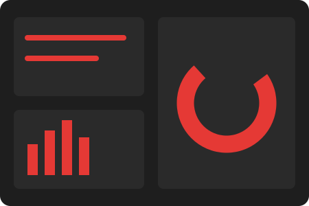
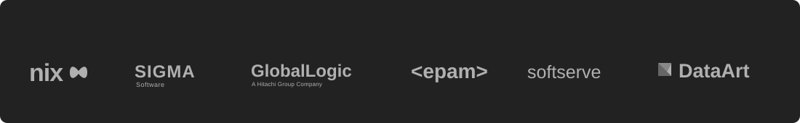

"Освіта на кафедрі ІКТ дає не лише сучасну технічну базу, але й гнучкість мислення, необхідну для роботи у провідних міжнародних IT-компаніях."
Олексій Коваленко
Senior Network Engineer, EPAM SystemsМи спеціалізуємось на підготовці фахівців в області мережевих, програмних та інформаційних технологій за двома ключовими напрямками:
«Інформаційні системи й технології»
«Електронні комунікації та радіотехніка»
| 1 семестр | Кредити | 2 семестр | Кредити |
|---|---|---|---|
| Мовні компетентності (іноземна мова) | 3.00 | Іноземна мова | 3.00 |
| Українські студії | 3.00 | «Формування системного наукового світогляду» (за вибором) | 3.00 |
| Правова компетентність (на вибір) | 3.00 | Основи теорії кіл | 4.00 |
| Вища математика | 5.00 | Вища математика | 5.00 |
| Дискретна математика | 5.00 | Фізика | 5.00 |
| Основи інфокомунікацій | 5.00 | Алгоритми й структури даних | 4.00 |
| Програмування на Python | 4.50 | Програмування на Python | 4.50 |
| — | — | Навчальна практика | 3.00 |
Перший предмет "Основи інфокомунікацій" розповість про цілі навчання освітньої програми, сучасні тенденції в інфокомунікаціях, інформаційних технологіях та перспективи вашого розвитку. Як і в усьому ХАІ, студент формує свою власну навчальну траєкторію вже на 1 курсі за допомогою дисциплін за вибором: "Іноземна мова", "Українські студії", "Гуманітарна або економічна дисципліна за вибором", "Правова компетентність за вибором". Вони розвивають так звані "м'які навички" (Soft Skills) і полегшують подальше навчання.
Фундаментальні курси "Вища математика", "Дискретна математика", "Фізика" формують основу для вивчення прикладних дисциплін. "Основи теорії кіл" знайомлять з апаратною електронікою. В "Основах програмування" фундаментально вивчається мова Python, IDE та Git. Курс "Алгоритми й структури даних" розвиває інженерне мислення, а "Навчальна практика" присвячена операційним системам сімейства Linux.
Досвідчених викладачів
Навчальних дисциплін
Талановитих випускників
Унікального досвіду
"Освіта на кафедрі ІКТ дає не лише сучасну технічну базу, але й гнучкість мислення, необхідну для роботи у провідних міжнародних IT-компаніях."
Олексій Коваленко
Senior Network Engineer, EPAM SystemsАудіовідгук випускника кафедри:
Від аудиторії — до реального проєкту.
Наші студенти не просто вивчають теорію — вони беруть участь у реальних проєктах, розробляють ІТ-рішення, створюють стартапи та співпрацюють з компаніями-партнерами. На кафедрі діють наукові лабораторії та ініціативи, де кожен знаходить свій вектор розвитку.


Відбулась зустріч студентів факультету радіоелектроніки та інфокомунікацій з представниками провідних IT-компаній регіону.